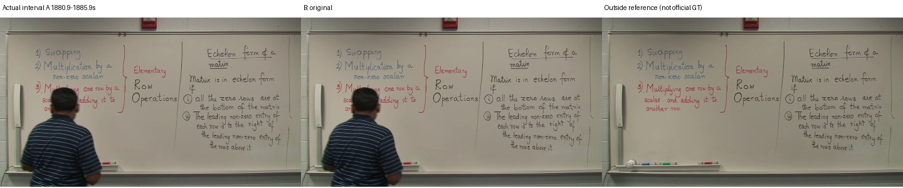
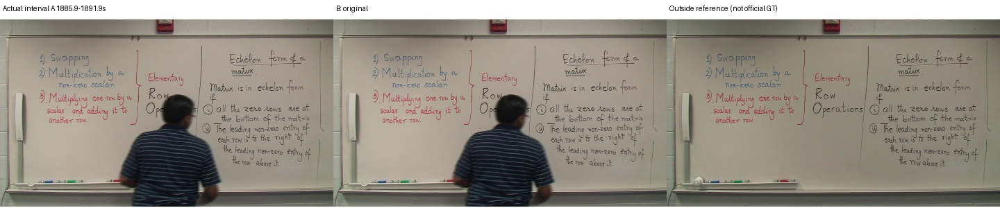
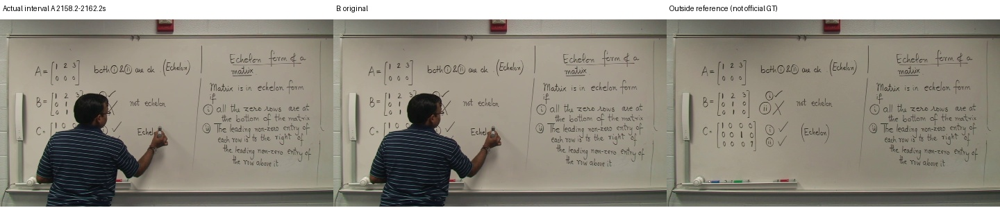
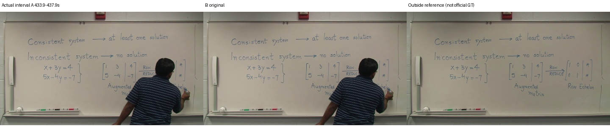

공식 GT가 아닌 보류한 원본 참고 영상과 비교합니다. 정상 전체영상 평가와 별도 실험입니다.

{'A': {'precision': 0.5676734733614038, 'recall': 0.9498147246453359, 'f1': 0.7106277656688945, 'gt_pixels': 121171, 'predicted_pixels': 205435, 'gt_components_area_ge_10': 222, 'component_coverage_at_80pct': 0.9414414414414415}, 'B': {'precision': 0.5676734733614038, 'recall': 0.9498147246453359, 'f1': 0.7106277656688945, 'gt_pixels': 121171, 'predicted_pixels': 205435, 'gt_components_area_ge_10': 222, 'component_coverage_at_80pct': 0.9414414414414415}}
{'A': {'precision': 0.5078862218462514, 'recall': 0.9701507470651014, 'f1': 0.6667305458687273, 'gt_pixels': 119936, 'predicted_pixels': 236425, 'gt_components_area_ge_10': 224, 'component_coverage_at_80pct': 0.9508928571428571}, 'B': {'precision': 0.5078862218462514, 'recall': 0.9701507470651014, 'f1': 0.6667305458687273, 'gt_pixels': 119936, 'predicted_pixels': 236425, 'gt_components_area_ge_10': 224, 'component_coverage_at_80pct': 0.9508928571428571}}
{'A': {'precision': 0.5080764838962138, 'recall': 0.9576341151830641, 'f1': 0.663911926961451, 'gt_pixels': 115069, 'predicted_pixels': 233827, 'gt_components_area_ge_10': 231, 'component_coverage_at_80pct': 0.9307359307359307}, 'B': {'precision': 0.5080764838962138, 'recall': 0.9576341151830641, 'f1': 0.663911926961451, 'gt_pixels': 115069, 'predicted_pixels': 233827, 'gt_components_area_ge_10': 231, 'component_coverage_at_80pct': 0.9307359307359307}}
{'A': {'precision': 0.3464343976973992, 'recall': 0.9597372885312748, 'f1': 0.5091000103670265, 'gt_pixels': 64253, 'predicted_pixels': 192478, 'gt_components_area_ge_10': 141, 'component_coverage_at_80pct': 0.950354609929078}, 'B': {'precision': 0.3464343976973992, 'recall': 0.9597372885312748, 'f1': 0.5091000103670265, 'gt_pixels': 64253, 'predicted_pixels': 192478, 'gt_components_area_ge_10': 141, 'component_coverage_at_80pct': 0.950354609929078}}